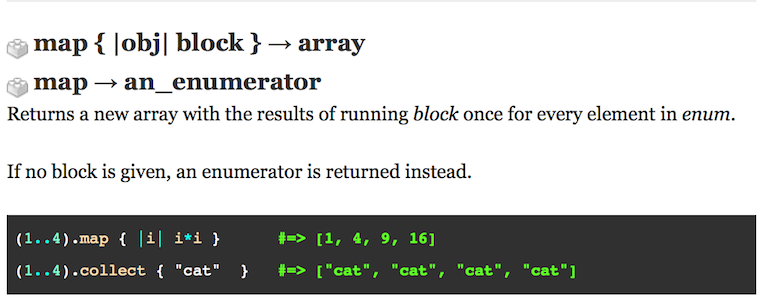

Enumerable#map
Enumerable#map
Map Manipulates Collections
11 July 2015
The map method comes courtesy of the Enumerables mix-in, which provides collection classes with methods to search, sort, or traverse the collection. The class itself must provide an .each method. Whereas the Array class supports the .map method (and also offers the destructive form .map!), in contrast the Hash class does not. Here is the definition of .map in the Ruby 2.2.0 docs:

The .map method is straightforward: if a block is given, the map method creates a new collection from the source collection in accordance with what the block specifies. If no block is given, .map returns an Enumerator. What does that mean?
At this stage in our Ruby education, I think that question is more perplexing than discerning what map does -- which is easy. The Enumerator is a class object that allows both internal and external iteration. Makes sense, but what does that mean.
It appears that the Enumerator could be described as an interim index generated from the method which gets passed into the next method (or object?). They contain information that can be used to iterate through a collection.
Going back to .map, why use it? Fire up IRB and try this comparative example:
> a=[1,2,3,4]
> a.each { |i| i += 5}
> amap = a.map { |i| i += 5}
You will notice that although the .each block executes without error, the effect is lost. Array a keeps its original contents. To achieve the desired effect of incrementing the members of array a you must employ .map, or .map! if you wish to overwrite the original array a.